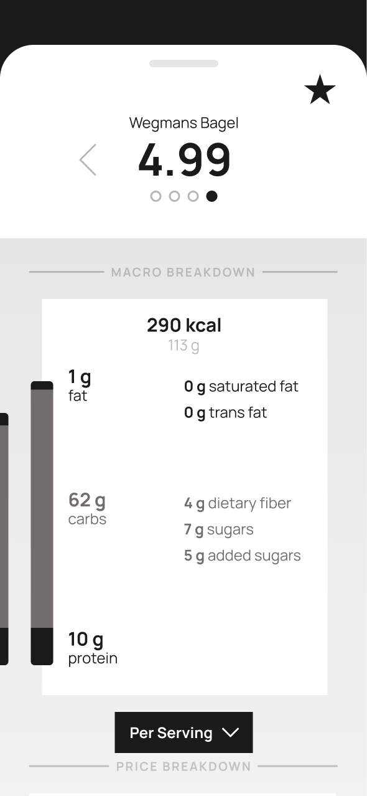
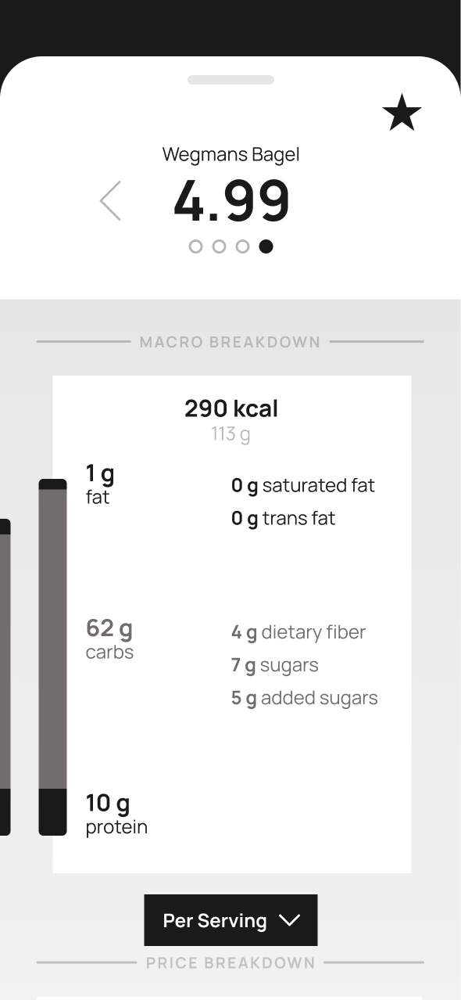

Scanner: a UX Case Study
Year — Spring 2024 (9 weeks)
Tools — Figma, After Effects
Synopsis — User experience, research, and prototyping-heavy case study on improving the in-person shopping experience.
Synopsis — User experience, research, and prototyping-heavy case study on improving the in-person shopping experience.
↑
As an introduction to the project, we went to Wegmans and conducted a heuristic evaluation on their new smart carts—essentially a built-in self-checkout that constantly updates while you shop—based on Jakob Nielsen's 10 usability heuristics:
For a more the full evaluation, you can take a look at the product deck—but overall, the cart didn't test well. It was more work than it was worth, easy to misuse (and abuse), and prone to error (although that last one is because it is still being user tested). The smart cart performed the worst in the heuristics related to error recovery, prevention, and help.
With these evaluations in mind, we set out to make our own products in effort to improve the shopping experience.
A mobile app where you:
The app reduces the user's mental load by instantly highlighting user-relevant factors in clear data visualizations, thereby eliminating the need for manual nutrition fact and ingredient list comparison.
This workflow consists of four main flows. Flows and sub-flows labels are consistent throughout the project (as well as in the project deck).
(0) Onboarding and (1) Nutrition Profile are setup process, where the user logs in or signs up and creates their personalized profile.
(A) Scan/Compare and (B) Account are daily use flows, which do include access to go back and change any preferences that were declared in the previous two setup flows.

(A) Scanning: Upon opening the app (for daily use), the user is taken directly to the scan screen. There is access to the (B) Account, and further interaction buttons pop up as the user scans items.


(A) Analysis: There are two versions of analysis: pictured below is the Compare feature. The user can see macronutrient distribution and ingredients by serving size, by weight, and by package.
The top of the tab has a collapsible compare-to-preferences feature, where a full opacity dot means the product meets the priority, and the filled dot means the product meets the priority better than the other.
 

(0,1,B) Personalization: This sections lets users set and update their account information and Nutrition Profile, which includes priorities and restrictions. Priorities have editable ranges, whereas restrictions act as a blacklist and will be flagged if found in a product.


I went for a clean look with crisp blues and greys (along with a pop of red for when a restriction warning pops up). I also picked a sans serif typeface for readability.
Finally, I implemented my style guides and prototyped the animation in Figma. (Click here to jump back to the animated video.)


The structure is built on a 4-pixel base grid, with a generally symmetric layout that flows from top to bottom, with padding between elements to visually group and separate sections.
Diving deeper into the UX side of concept developmenthas been a delight. I had never spent so long considering and defining functionality before beginning the visual designs. But with every minuscule detail, interaction, and state planned out, there is no room left for redundancy or ambiguity. Everything has a purpose—and with intent so clear, the visuals almost design themselves.
Overall, the process served as a great first look into UX design, and it gave me a plethora of opportunities to really sit down, think hard, and solve problems
Interested in working together?
Send an email to lena@cordeliart.com!